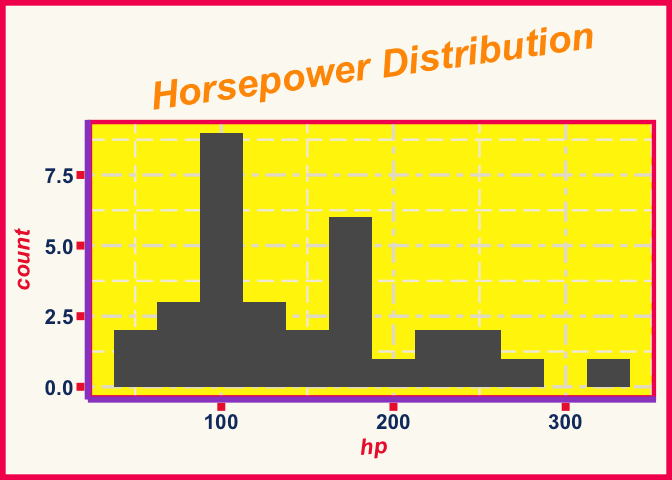

The goal of ggthemeAI is to make it quicker to prototype highly-custom ‘ggplot2’ themes. It uses LLMs to rapidly generate theme functions according to the visual characteristics you describe.
Imagine some theme_x() function that might look cool. Now, if you can describe it in natural language, you can try a version of it instantly!
It uses ellmer as a chat interface to various LLM providers.
Note the package is still in development, so the API may change prior to a CRAN release.
Features
-
make_ai_theme(): Create a ggplot2 theme function from a description of the desired theme - Choose your level of safety: Get a theme function directly, or get an expression that you can inspect before evaluating
- function blacklisting:
make_ai_theme()will check the generated theme for dangerous function calls (likeunlink()) and warn you if it finds any (to be combined with other safety layers/practices) - Image input: optionally use ellmer image content functions to add images to the chat
- ggplot2-focused system prompts for ellmer chats
-
tool_list_fonts(): register with your ellmer chats withchat$register_tool()so your LLM can see the fonts available in your R session, and use them in themes
Installation
You can install the development version of ggthemeAI like so:
pak::pak('arkraieski/ggthemeAI')Example and basic usage
This example shows you how to get started creating themes with ggthemeAI. The make_ai_theme() function takes a chat object and a description of the theme you want, and returns code for a ggplot2 theme function.
library(ggplot2)
library(ellmer)
library(ggthemeAI)
chat <- chat_openai() # can customize system prompt here if desired
#> Using model = "gpt-4.1".
theme_expression <- make_ai_theme(chat,
'solarized dark take on the default ggplot2 theme',
return_type = "expression")
#> function(base_size = 11, base_family = "") {
#> # Define Solarized Dark color palette
#> bg <- "#002b36" # base03
#> panel_bg <- "#002b36" # base03
#> panel_fg <- "#586e75" # base01
#> grid_maj <- "#073642" # base02
#> grid_min <- "#073642" # base02 (use transparency for min grid)
#> axis_col <- "#93a1a1" # base1
#> text_col <- "#eee8d5" # base2
#> title_col <- "#b58900" # yellow
#> subtitle_col <- "#2aa198" # cyan
#> legend_bg <- "#073642" # base02
#> strip_bg <- "#073642" # base02
#> strip_fg <- "#b58900" # yellow
#> facet_fg <- "#b58900" # yellow
#>
#> # Use the classic theme as a starting point for easier reading vs. theme_grey
#> theme_classic(base_size = base_size, base_family = base_family) %+replace%
#> theme(
#> # Main plot background and panel background
#> plot.background = element_rect(fill = bg, color = NA),
#> panel.background = element_rect(fill = panel_bg, color = NA),
#> # Use contrasting color for text for accessibility
#> text = element_text(color = text_col, size = base_size, family =
#> base_family),
#> # Titles with solarized accent
#> plot.title = element_text(color = title_col, size = rel(1.25), face =
#> "bold", hjust = 0.0),
#> plot.subtitle = element_text(color = subtitle_col, size = rel(1.05),
#> hjust = 0.0),
#> plot.caption = element_text(color = panel_fg, size = rel(0.85), hjust =
#> 1, margin = margin(t = 8)),
#> # Axis lines & ticks for contrast
#> axis.title = element_text(color = axis_col, size = rel(1.1)),
#> axis.text = element_text(color = axis_col),
#> axis.line = element_line(color = axis_col, linewidth = 0.5),
#> axis.ticks = element_line(color = axis_col, linewidth = 0.4),
#> # Major & minor grid lines subtly present
#> panel.grid.major = element_line(color = grid_maj, linewidth = 0.5),
#> panel.grid.minor = element_line(color = grid_min, linewidth = 0.25,
#> linetype = "dotted"),
#> # Remove minor grid if not desired
#> # panel.grid.minor = element_blank(),
#> # Legend styling
#> legend.background = element_rect(fill = legend_bg, color = NA),
#> legend.key = element_rect(fill = legend_bg, color = NA),
#> legend.text = element_text(color = panel_fg),
#> legend.title = element_text(color = title_col, face = "bold"),
#> # Facet strip (for facet_wrap/ facet_grid)
#> strip.background = element_rect(fill = strip_bg, color = NA),
#> strip.text = element_text(color = strip_fg, face = "bold"),
#> # Remove axis ticks length for a modern look
#> axis.ticks.length = unit(5, "pt"),
#> # Remove panel border for a flat, modern look
#> panel.border = element_blank(),
#> # Margins
#> plot.margin = margin(11, 11, 11, 11),
#> # Avoid grey grid in legend
#> legend.box.background = element_blank()
#> )
#> }
# in an interactive session, you can/should now inspect the content of theme code
# before proceeding
# theme_expression
# eval to create the final theme function
theme_solarized <- eval(theme_expression)
ggplot(mtcars, aes(x = hp)) +
geom_histogram(binwidth = 25) +
labs(title = "Horsepower Distribution") +
theme_solarized() # LLM wrote the code for this function
If you want to skip the step of evaluating the expression, you can use return_type = "function" (or just omit that argument) to get a function directly. However, this is fundamentally kind of dangerous because you are executing LLM-generated code. However, in a low-risk environment (ideally disposable/isolated like Docker) where all input is trusted, you might be OK with that. (make_ai_theme() does call find_dangerous_calls() but there are ways function calls can be constructed/obfuscated to get around that)
It should be noted that make_ai_theme() is not a pure function. This is by design. In addition to return the new theme, the state of the R6 Chat is updated. You can then chat with the LLM to have it explain the theme or iterate on it.
There’s also a check_theme() function that checks if a function is actually a ggplot2 theme. However, this function only works by actually executing the theme, so it shouldn’t be used as a security measure. I intend to add some contrast checking to that function if it remains in the package.
System prompts and tools
ggthemeAI also provides a couple system prompts to help give the LLM you’re working with extra extra knowledge that may be helpful generating themes for ggplot2. ggplot2_doc_prompt() provides a prompt that includes the content of the ggplot2 documentation for themes and elements, and ggplot2_news_prompt() provides a prompt that includes the news entries for the current major version of ggplot2 (using the version of the news on your system). Both of these can help the LLM avoid using deprecated/imagined features, and help it understand the ggplot2 theme system better. However, they both will cost extra money, so try to keep chats short.
You can also use the tool_list_fonts() function to register a tool with your chat that lists the fonts available in your R session. This can be useful for LLMs to know what fonts are available when generating themes.
So, to set up an ellmer chat that is ‘supercharged’ (ugh, sorry) for ggplot2 themes, you can do something like this:
chat <- chat_openai(system_prompt = ggplot2_doc_prompt())
chat$register_tool(tool_list_fonts()) # now LLM can call the function this wrapsUse cases
- Rapid design and prototyping of highly custom themes for stylized infographics
- Trying out a bunch of drastically different looks quickly
- Starting a custom theme without starting from scratch
- Iterating on themes conversationally
- Learning ggplot2 and improving skills: see working examples of extensively-customized themes and then have the LLM explain it
- Accessibility use cases: Assistance designing/modifying themes that are accessible to users with low-vision, colorblindness, etc.
Warnings/Disclaimers
It’s not guaranteed that the themes produced by this package will:
- Avoid using deprecated ggplot2 features
- Adhere to “best-practices” in design, accessibility, etc.
- Not do nasty things like calling
unlink()(though validating the safety of generated functions is a development priority)
Also, it’s worth thinking about how custom fonts (and other design choices like that) could enhance your themes, instead of just always using the LLM output and never trying to do anything more interesting.
Lastly, for use in Shiny apps, you need to be careful about security. Using a hardened system prompt is a good idea if you don’t want people doing kooky things in your app. Currently, use in shiny in production is not recommended, but might be fine for internal apps or prototypes if other precautions are taken to keep things low risk.
Bonus examples
theme_cyberpunk <- make_ai_theme(chat,
'cyberpunk neon with Japanese influence')
#> function(base_size = 12, base_family = "") {
#> # Cyberpunk-inspired neon color palette with Japanese influence
#> bg_color <- "#181726" # deep twilight purple as plot background
#> panel_bg_color <- "#232032" # slightly lighter for panel background
#> grid_major_col <- "#3c3a69" # dim blue-violet for primary grid
#> grid_minor_col <- "#222156" # almost indigo for minor grid
#> axis_line_col <- "#f5f5f7" # nearly white for sharp contrast
#> axis_text_col <- "#F9F6EE" # very light ivory
#> axis_title_col <- "#F6019D" # neon magenta/pink for major accent
#> title_col <- "#00ffe7" # neon aqua/cyan for titles
#> subtitle_col <- "#ffdc57" # neon yellow for subtitle
#> caption_col <- "#a599e9" # soft neon lavender for captions
#> legend_bg_col <- "#181726" # match plot bg
#> legend_key_col <- "#232032" # panel bg
#> legend_title_col <- "#F6019D"
#> legend_text_col <- "#ffdc57"
#> strip_bg_col <- "#3c3a69" # blue-violet as facet strip background
#> strip_fg_col <- "#fff" # pure white for strip text
#>
#> # Optional: subtle Japanese touch, e.g. dotted grid lines evoke Tokyo neon
#> streets
#> base_family_jp <- if (base_family == "") "Noto Sans JP" else base_family
#>
#> theme_minimal(base_size = base_size, base_family = base_family_jp) %+replace%
#>
#> theme(
#> # Backgrounds
#> plot.background = element_rect(fill = bg_color, color = NA),
#> panel.background = element_rect(fill = panel_bg_color, color = NA),
#> # Text colors & fonts
#> text = element_text(color = axis_text_col, family =
#> base_family_jp),
#> plot.title = element_text(color = title_col, face = "bold",
#> size = rel(1.7),
#> margin = margin(b = 12),
#> family = base_family_jp, hjust = 0),
#> plot.subtitle = element_text(color = subtitle_col, face = "plain",
#> size = rel(1.15),
#> margin = margin(b = 16),
#> family = base_family_jp),
#> plot.caption = element_text(color = caption_col, size = rel(0.9),
#> hjust = 1,
#> margin = margin(t = 10)),
#> axis.title = element_text(color = axis_title_col, face =
#> "bold", size = rel(1.2)),
#> axis.text = element_text(color = axis_text_col, size =
#> rel(1)),
#> # Axis lines and ticks
#> axis.line = element_line(color = axis_line_col, linewidth =
#> 0.8),
#> axis.ticks = element_line(color = axis_title_col, linewidth =
#> 0.5),
#> axis.ticks.length = unit(7, "pt"),
#> # Neon accent grid lines, dotted for cyberpunk effect
#> panel.grid.major = element_line(color = grid_major_col, linewidth =
#> 0.7, linetype = "dotted"),
#> panel.grid.minor = element_line(color = grid_minor_col, linewidth =
#> 0.35, linetype = "dotted"),
#> # Remove panel border for a cleaner luminous look
#> panel.border = element_blank(),
#> # Legend neon styling
#> legend.background = element_rect(fill = legend_bg_col, color = NA),
#> legend.key = element_rect(fill = legend_key_col, color = NA),
#> legend.title = element_text(color = legend_title_col, size =
#> rel(1.1), face = "bold"),
#> legend.text = element_text(color = legend_text_col, size =
#> rel(0.95)),
#> # Faceting - glowing strip
#> strip.background = element_rect(fill = strip_bg_col, color = NA),
#> strip.text = element_text(color = strip_fg_col, family =
#> base_family_jp,
#> face = "bold", size = rel(1.15)),
#> # Margins for floating-in-dark appearance
#> plot.margin = margin(18, 16, 18, 16),
#> # Remove minor grid on y for slightly less clutter
#> panel.grid.minor.y = element_blank(),
#> # Keep legend box background transparent
#> legend.box.background = element_blank()
#> # You may optionally add stylized Japanese text (e.g., grid labels or
#> watermark), but that's data, not theme.
#> )
#> }
p <- ggplot(mtcars, aes(x = hp)) +
geom_histogram(binwidth = 25) +
labs(title = "Horsepower Distribution")
p + theme_cyberpunk()
#> Warning in grid.Call(C_stringMetric, as.graphicsAnnot(x$label)): no font could
#> be found for family "Noto Sans JP"
#> Warning in grid.Call(C_stringMetric, as.graphicsAnnot(x$label)): no font could
#> be found for family "Noto Sans JP"
#> Warning in grid.Call(C_stringMetric, as.graphicsAnnot(x$label)): no font could
#> be found for family "Noto Sans JP"
#> Warning in grid.Call(C_stringMetric, as.graphicsAnnot(x$label)): no font could
#> be found for family "Noto Sans JP"
#> Warning in grid.Call(C_stringMetric, as.graphicsAnnot(x$label)): no font could
#> be found for family "Noto Sans JP"
#> Warning in grid.Call(C_stringMetric, as.graphicsAnnot(x$label)): no font could
#> be found for family "Noto Sans JP"
#> Warning in grid.Call(C_stringMetric, as.graphicsAnnot(x$label)): no font could
#> be found for family "Noto Sans JP"
#> Warning in grid.Call(C_stringMetric, as.graphicsAnnot(x$label)): no font could
#> be found for family "Noto Sans JP"
#> Warning in grid.Call(C_stringMetric, as.graphicsAnnot(x$label)): no font could
#> be found for family "Noto Sans JP"
#> Warning in grid.Call(C_stringMetric, as.graphicsAnnot(x$label)): no font could
#> be found for family "Noto Sans JP"
#> Warning in grid.Call(C_stringMetric, as.graphicsAnnot(x$label)): no font could
#> be found for family "Noto Sans JP"
#> Warning in grid.Call(C_stringMetric, as.graphicsAnnot(x$label)): no font could
#> be found for family "Noto Sans JP"
#> Warning in grid.Call(C_stringMetric, as.graphicsAnnot(x$label)): no font could
#> be found for family "Noto Sans JP"
#> Warning in grid.Call(C_stringMetric, as.graphicsAnnot(x$label)): no font could
#> be found for family "Noto Sans JP"
#> Warning in grid.Call(C_textBounds, as.graphicsAnnot(x$label), x$x, x$y, : no
#> font could be found for family "Noto Sans JP"
#> Warning in grid.Call(C_textBounds, as.graphicsAnnot(x$label), x$x, x$y, :
#> Unable to calculate text width/height (using zero)
#> Warning in grid.Call(C_textBounds, as.graphicsAnnot(x$label), x$x, x$y, : no
#> font could be found for family "Noto Sans JP"
#> Warning in grid.Call(C_textBounds, as.graphicsAnnot(x$label), x$x, x$y, :
#> Unable to calculate text width/height (using zero)
#> Warning in grid.Call(C_textBounds, as.graphicsAnnot(x$label), x$x, x$y, : no
#> font could be found for family "Noto Sans JP"
#> Warning in grid.Call(C_textBounds, as.graphicsAnnot(x$label), x$x, x$y, :
#> Unable to calculate text width/height (using zero)
#> Warning in grid.Call(C_textBounds, as.graphicsAnnot(x$label), x$x, x$y, : no
#> font could be found for family "Noto Sans JP"
#> Warning in grid.Call(C_textBounds, as.graphicsAnnot(x$label), x$x, x$y, :
#> Unable to calculate text width/height (using zero)
#> Warning in grid.Call(C_textBounds, as.graphicsAnnot(x$label), x$x, x$y, : no
#> font could be found for family "Noto Sans JP"
#> Warning in grid.Call(C_textBounds, as.graphicsAnnot(x$label), x$x, x$y, :
#> Unable to calculate text width/height (using zero)
#> Warning in grid.Call(C_textBounds, as.graphicsAnnot(x$label), x$x, x$y, : no
#> font could be found for family "Noto Sans JP"
#> Warning in grid.Call(C_textBounds, as.graphicsAnnot(x$label), x$x, x$y, :
#> Unable to calculate text width/height (using zero)
#> Warning in grid.Call(C_textBounds, as.graphicsAnnot(x$label), x$x, x$y, : no
#> font could be found for family "Noto Sans JP"
#> Warning in grid.Call(C_textBounds, as.graphicsAnnot(x$label), x$x, x$y, :
#> Unable to calculate text width/height (using zero)
#> Warning in grid.Call(C_stringMetric, as.graphicsAnnot(x$label)): no font could
#> be found for family "Noto Sans JP"
#> Warning in grid.Call(C_stringMetric, as.graphicsAnnot(x$label)): no font could
#> be found for family "Noto Sans JP"
#> Warning in grid.Call(C_stringMetric, as.graphicsAnnot(x$label)): no font could
#> be found for family "Noto Sans JP"
#> Warning in grid.Call(C_stringMetric, as.graphicsAnnot(x$label)): no font could
#> be found for family "Noto Sans JP"
#> Warning in grid.Call(C_stringMetric, as.graphicsAnnot(x$label)): no font could
#> be found for family "Noto Sans JP"
#> Warning in grid.Call(C_stringMetric, as.graphicsAnnot(x$label)): no font could
#> be found for family "Noto Sans JP"
#> Warning in grid.Call(C_stringMetric, as.graphicsAnnot(x$label)): no font could
#> be found for family "Noto Sans JP"
#> Warning in grid.Call(C_stringMetric, as.graphicsAnnot(x$label)): no font could
#> be found for family "Noto Sans JP"
#> Warning in grid.Call(C_stringMetric, as.graphicsAnnot(x$label)): no font could
#> be found for family "Noto Sans JP"
#> Warning in grid.Call(C_stringMetric, as.graphicsAnnot(x$label)): no font could
#> be found for family "Noto Sans JP"
#> Warning in grid.Call(C_stringMetric, as.graphicsAnnot(x$label)): no font could
#> be found for family "Noto Sans JP"
#> Warning in grid.Call(C_stringMetric, as.graphicsAnnot(x$label)): no font could
#> be found for family "Noto Sans JP"
#> Warning in grid.Call(C_stringMetric, as.graphicsAnnot(x$label)): no font could
#> be found for family "Noto Sans JP"
#> Warning in grid.Call(C_stringMetric, as.graphicsAnnot(x$label)): no font could
#> be found for family "Noto Sans JP"
#> Warning in grid.Call(C_stringMetric, as.graphicsAnnot(x$label)): no font could
#> be found for family "Noto Sans JP"
#> Warning in grid.Call(C_stringMetric, as.graphicsAnnot(x$label)): no font could
#> be found for family "Noto Sans JP"
#> Warning in grid.Call(C_stringMetric, as.graphicsAnnot(x$label)): no font could
#> be found for family "Noto Sans JP"
#> Warning in grid.Call(C_stringMetric, as.graphicsAnnot(x$label)): no font could
#> be found for family "Noto Sans JP"
#> Warning in grid.Call(C_stringMetric, as.graphicsAnnot(x$label)): no font could
#> be found for family "Noto Sans JP"
#> Warning in grid.Call(C_stringMetric, as.graphicsAnnot(x$label)): no font could
#> be found for family "Noto Sans JP"
#> Warning in grid.Call(C_stringMetric, as.graphicsAnnot(x$label)): no font could
#> be found for family "Noto Sans JP"
#> Warning in grid.Call(C_stringMetric, as.graphicsAnnot(x$label)): no font could
#> be found for family "Noto Sans JP"
#> Warning in grid.Call(C_stringMetric, as.graphicsAnnot(x$label)): no font could
#> be found for family "Noto Sans JP"
#> Warning in grid.Call(C_stringMetric, as.graphicsAnnot(x$label)): no font could
#> be found for family "Noto Sans JP"
#> Warning in grid.Call(C_stringMetric, as.graphicsAnnot(x$label)): no font could
#> be found for family "Noto Sans JP"
#> Warning in grid.Call(C_stringMetric, as.graphicsAnnot(x$label)): no font could
#> be found for family "Noto Sans JP"
#> Warning in grid.Call(C_stringMetric, as.graphicsAnnot(x$label)): no font could
#> be found for family "Noto Sans JP"
#> Warning in grid.Call(C_stringMetric, as.graphicsAnnot(x$label)): no font could
#> be found for family "Noto Sans JP"
#> Warning in grid.Call(C_textBounds, as.graphicsAnnot(x$label), x$x, x$y, : no
#> font could be found for family "Noto Sans JP"
#> Warning in grid.Call(C_textBounds, as.graphicsAnnot(x$label), x$x, x$y, : no
#> font could be found for family "Noto Sans JP"
#> Warning in grid.Call(C_textBounds, as.graphicsAnnot(x$label), x$x, x$y, :
#> Unable to calculate text width/height (using zero)
#> Warning in grid.Call(C_textBounds, as.graphicsAnnot(x$label), x$x, x$y, : no
#> font could be found for family "Noto Sans JP"
#> Warning in grid.Call(C_textBounds, as.graphicsAnnot(x$label), x$x, x$y, : no
#> font could be found for family "Noto Sans JP"
#> Warning in grid.Call(C_textBounds, as.graphicsAnnot(x$label), x$x, x$y, :
#> Unable to calculate text width/height (using zero)
#> Warning in grid.Call(C_textBounds, as.graphicsAnnot(x$label), x$x, x$y, : no
#> font could be found for family "Noto Sans JP"
#> Warning in grid.Call(C_textBounds, as.graphicsAnnot(x$label), x$x, x$y, : no
#> font could be found for family "Noto Sans JP"
#> Warning in grid.Call(C_textBounds, as.graphicsAnnot(x$label), x$x, x$y, :
#> Unable to calculate text width/height (using zero)
#> Warning in grid.Call.graphics(C_text, as.graphicsAnnot(x$label), x$x, x$y, : no
#> font could be found for family "Noto Sans JP"
#> Warning in grid.Call.graphics(C_text, as.graphicsAnnot(x$label), x$x, x$y, : no
#> font could be found for family "Noto Sans JP"
#> Warning in grid.Call.graphics(C_text, as.graphicsAnnot(x$label), x$x, x$y, : no
#> font could be found for family "Noto Sans JP"
#> Warning in grid.Call.graphics(C_text, as.graphicsAnnot(x$label), x$x, x$y, : no
#> font could be found for family "Noto Sans JP"
#> Warning in grid.Call.graphics(C_text, as.graphicsAnnot(x$label), x$x, x$y, : no
#> font could be found for family "Noto Sans JP"
#> Warning in grid.Call.graphics(C_text, as.graphicsAnnot(x$label), x$x, x$y, : no
#> font could be found for family "Noto Sans JP"
#> Warning in grid.Call.graphics(C_text, as.graphicsAnnot(x$label), x$x, x$y, : no
#> font could be found for family "Noto Sans JP"
#> Warning in grid.Call.graphics(C_text, as.graphicsAnnot(x$label), x$x, x$y, : no
#> font could be found for family "Noto Sans JP"
#> Warning in grid.Call.graphics(C_text, as.graphicsAnnot(x$label), x$x, x$y, : no
#> font could be found for family "Noto Sans JP"
#> Warning in grid.Call.graphics(C_text, as.graphicsAnnot(x$label), x$x, x$y, : no
#> font could be found for family "Noto Sans JP"
#> Warning in grid.Call.graphics(C_text, as.graphicsAnnot(x$label), x$x, x$y, : no
#> font could be found for family "Noto Sans JP"
#> Warning in grid.Call.graphics(C_text, as.graphicsAnnot(x$label), x$x, x$y, : no
#> font could be found for family "Noto Sans JP"
#> Warning in grid.Call.graphics(C_text, as.graphicsAnnot(x$label), x$x, x$y, : no
#> font could be found for family "Noto Sans JP"
#> Warning in grid.Call.graphics(C_text, as.graphicsAnnot(x$label), x$x, x$y, : no
#> font could be found for family "Noto Sans JP"
#> Warning in grid.Call.graphics(C_text, as.graphicsAnnot(x$label), x$x, x$y, : no
#> font could be found for family "Noto Sans JP"
#> Warning in grid.Call.graphics(C_text, as.graphicsAnnot(x$label), x$x, x$y, : no
#> font could be found for family "Noto Sans JP"
#> Warning in grid.Call.graphics(C_text, as.graphicsAnnot(x$label), x$x, x$y, : no
#> font could be found for family "Noto Sans JP"
#> Warning in grid.Call.graphics(C_text, as.graphicsAnnot(x$label), x$x, x$y, : no
#> font could be found for family "Noto Sans JP"
#> Warning in grid.Call.graphics(C_text, as.graphicsAnnot(x$label), x$x, x$y, : no
#> font could be found for family "Noto Sans JP"
#> Warning in grid.Call.graphics(C_text, as.graphicsAnnot(x$label), x$x, x$y, : no
#> font could be found for family "Noto Sans JP"
#> Warning in grid.Call.graphics(C_text, as.graphicsAnnot(x$label), x$x, x$y, : no
#> font could be found for family "Noto Sans JP"
#> Warning in grid.Call.graphics(C_text, as.graphicsAnnot(x$label), x$x, x$y, : no
#> font could be found for family "Noto Sans JP"
#> Warning in grid.Call.graphics(C_text, as.graphicsAnnot(x$label), x$x, x$y, : no
#> font could be found for family "Noto Sans JP"
theme_swiss <- make_ai_theme(chat,
'minimalist Swiss design')
#> function(base_size = 12, base_family = "") {
#> # Minimalist Swiss design relies on clarity, strong contrast, generous
#> whitespace, and asymmetric composition.
#> # Use mostly black, white, and a bold accent (classic Swiss red).
#> bg_color <- "#FFFFFF" # pure white background
#> panel_bg_color <- "#FFFFFF" # panels seamlessly match the plot background
#> grid_major_col <- "#E0E0E0" # light gray major grid for reference but not
#> distraction
#> grid_minor_col <- "#F5F5F5" # even lighter minor grid
#> axis_col <- "#222222" # dark gray (not pure black) for axis text
#> and lines for a softer look
#> title_col <- "#D40000" # classic Swiss red for high impact (used for
#> main title)
#> subtitle_col <- "#555555" # muted dark gray for subtitle
#> caption_col <- "#AAAAAA" # very soft gray for caption
#> strip_bg_col <- "#FFFFFF" # faceting strips should blend in
#> strip_fg_col <- "#D40000" # Swiss red for strip text
#> legend_bg_col <- "#FFFFFF" # legend box matches the background
#> legend_text_col <- "#222222"
#> legend_title_col <- "#222222"
#>
#> theme_minimal(base_size = base_size, base_family = base_family) %+replace%
#> theme(
#> # Backgrounds are intentionally flat white to emphasize clarity and grid
#> plot.background = element_rect(fill = bg_color, color = NA),
#> panel.background = element_rect(fill = panel_bg_color, color = NA),
#> # Grid lines: clear, light, do not dominate the scene
#> panel.grid.major = element_line(color = grid_major_col, linewidth =
#> 0.5),
#> panel.grid.minor = element_line(color = grid_minor_col, linewidth =
#> 0.25),
#> # Remove all panel borders for cleanliness
#> panel.border = element_blank(),
#> # Titles and subtitles: strong and clear, with bold Swiss red accent for
#> the title
#> plot.title = element_text(color = title_col, face = "bold",
#> size = rel(1.8),
#> margin = margin(b = 10), hjust = 0,
#> family = base_family),
#> plot.subtitle = element_text(color = subtitle_col, size =
#> rel(1.2),
#> margin = margin(b = 16), hjust = 0,
#> family = base_family),
#> plot.caption = element_text(color = caption_col, size = rel(0.9),
#> hjust = 1, margin = margin(t = 12)),
#> # Axis elements: very strong clarity but not harsh; no tick marks for
#> supreme minimalism
#> axis.title = element_text(color = axis_col, face = "bold"),
#> axis.text = element_text(color = axis_col),
#> axis.line.x = element_line(color = axis_col, linewidth = 0.5),
#> axis.line.y = element_line(color = axis_col, linewidth = 0.5),
#> axis.ticks = element_blank(),
#> # Faceting: strip text in red for emphasis, but background blends in
#> strip.background = element_rect(fill = strip_bg_col, color = NA),
#> strip.text = element_text(color = strip_fg_col, size =
#> rel(1.2), face = "bold"),
#> # Legend styling: white background, minimal box, black/gray text
#> legend.background = element_rect(fill = legend_bg_col, color = NA),
#> legend.key = element_rect(fill = legend_bg_col, color = NA),
#> legend.text = element_text(color = legend_text_col),
#> legend.title = element_text(color = legend_title_col, face =
#> "bold"),
#> legend.position = "bottom",
#> # Whitespace: ample margins for breathability, consistent with Swiss
#> style
#> plot.margin = margin(24, 24, 24, 24)
#> )
#> }
p + theme_swiss()
theme_chartjunk <- make_ai_theme(chat,
'turn the chartjunk level up to 11. people should be genuinely horrified by this chart. there should be tons extra crap everywhere.')
#> function(base_size = 13, base_family = "") {
#> # Deliberately create a visually overwhelming, cluttered "chartjunk" theme.
#> # Contrasting colors, maximalist grid, excessive backgrounds, drop shadows,
#> watermark, borders―everything!
#> bg_color <- "#FFFFC1" # retina-burning yellowish background
#> panel_bg_color <- "#FFD6F5" # jarring pastel pink panel
#> panel_border_col <- "#00FF00" # green border for panels
#> grid_major_col <- "#0000FF" # strong blue major grid
#> grid_minor_col <- "#FF0000" # bright red minor grid
#> axis_title_col <- "#00FFFF" # cyan axis titles
#> axis_text_col <- "#800080" # purple axis text
#> axis_line_col <- "#FFA500" # orange axis lines
#> title_col <- "#FF00FF" # magenta plot title
#> subtitle_col <- "#008000" # green subtitle
#> caption_col <- "#404040" # muddy gray
#> strip_bg_col <- "#00FFFF" # glowing cyan for strip bg
#> strip_fg_col <- "#FF6600" # orange for strip text
#> legend_bg_col <- "#00FF00" # neon green
#> legend_key_col <- "#FF0000" # red legend keys
#> legend_text_col <- "#0000FF" # blue legend text
#> legend_title_col <- "#FFFFFF" # white legend title
#> shadow_col <- "#B22222" # firebrick for drop shadow effects
#>
#> # "Watermark" text for pure chartjunk
#> watermark_text <- "CHARTJUNK!"
#>
#> theme_void(base_size = base_size, base_family = base_family) %+replace%
#> theme(
#> # Super-bright, jarring backgrounds
#> plot.background = element_rect(fill = bg_color, color = "#FF00FF",
#> linewidth = 10), # magenta plot border
#> panel.background = element_rect(fill = panel_bg_color, color = NA),
#> # Oversized panel border for maximal clutter
#> panel.border = element_rect(fill = NA, color =
#> panel_border_col, linewidth = 6, linetype = "dashed"),
#> # Maximal grid lines: every line, heavy, clashing colors
#> panel.grid.major = element_line(color = grid_major_col, linewidth =
#> 1.4, linetype = "longdash"),
#> panel.grid.minor = element_line(color = grid_minor_col, linewidth =
#> 0.8, linetype = "dotdash"),
#> # Axis lines in screaming orange, thick and double
#> axis.line = element_line(color = axis_line_col, linewidth =
#> 2.5, linetype = "twodash"),
#> # Axes with both ticks and tick text heavily stylized
#> axis.ticks = element_line(color = "#000000", linewidth = 2,
#> linetype = "dotted"),
#> axis.ticks.length = unit(9, "pt"),
#> axis.title = element_text(color = axis_title_col, size =
#> rel(2), face = "bold.italic",
#> family = "Comic Sans MS"),
#> axis.text = element_text(color = axis_text_col, size =
#> rel(1.5), face = "bold.italic",
#> family = "Impact"),
#> # Drop shadow for axis text (mimicked by using a shadow grob below axis
#> text)
#> axis.text.x.top = element_text(color = shadow_col, margin =
#> margin(b = -15)),
#> axis.text.y.right = element_text(color = shadow_col, margin =
#> margin(l = -15)),
#> # Loud plot title, subtitle, caption, all big
#> plot.title = element_text(color = title_col, face =
#> "bold.italic", size = rel(3.2),
#> family = "Papyrus", hjust = 0.5,
#> margin = margin(b = 10)),
#> plot.subtitle = element_text(color = subtitle_col, face =
#> "bold", size = rel(2),
#> family = "Comic Sans MS", hjust =
#> 0.5, margin = margin(b = 18)),
#> plot.caption = element_text(color = caption_col, size =
#> rel(1.3), face = "bold",
#> family = "Impact", hjust = 0.5,
#> margin = margin(t = 25)),
#> # Facet strips with more noise
#> strip.background = element_rect(fill = strip_bg_col, color =
#> "#FF00FF", linewidth = 4),
#> strip.text = element_text(color = strip_fg_col, size =
#> rel(1.9), face = "bold.italic",
#> family = "Papyrus"),
#> # Giant legend box with neon bg and red keys
#> legend.background = element_rect(fill = legend_bg_col, color =
#> "#FF00FF", linewidth = 6),
#> legend.key = element_rect(fill = legend_key_col, color =
#> "#FFFF00", linewidth = 3), # yellow border
#> legend.text = element_text(color = legend_text_col, size =
#> rel(1.5), face = "bold.italic",
#> family = "Comic Sans MS"),
#> legend.title = element_text(color = legend_title_col, size =
#> rel(1.6), face = "bold",
#> family = "Impact"),
#> legend.position = "right",
#> # Overly excessive margins to crowd in from sides, but top and bottom
#> little space
#> plot.margin = margin(2, 80, 2, 65),
#> # Add base grid everywhere just in case
#> panel.grid = element_line(),
#> # Insert a watermark-like annotation (user needs to add, but here's
#> guidance as comment)
#> # ggplot(...) + annotate("text", x = Inf, y = -Inf, label =
#> watermark_text,
#> # hjust = 1.2, vjust = -0.5, angle = 30, cex = 14, color =
#> "#FF00FF", alpha = 0.1,
#> # family = "Comic Sans MS", fontface = "bold")
#> # For extra chartjunk, you can ask users to add geom_hline, geom_vline,
#> geom_mark*, and clip art!
#> # Clutter up strip placement
#> strip.placement = "outside"
#> )
#> }
p + theme_chartjunk()